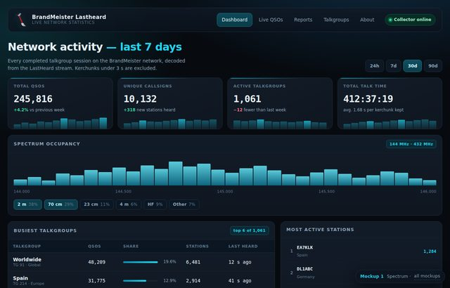

Spectrum
Dark · SDR-inspired
A night-mode operator console: spectrum occupancy as the hero element, glowing stat tiles and a cyan-on-ink palette borrowed from SDR software. Best if the site is used late at night alongside rig control software.
ink · panel · cyan · amber
Open mockup →